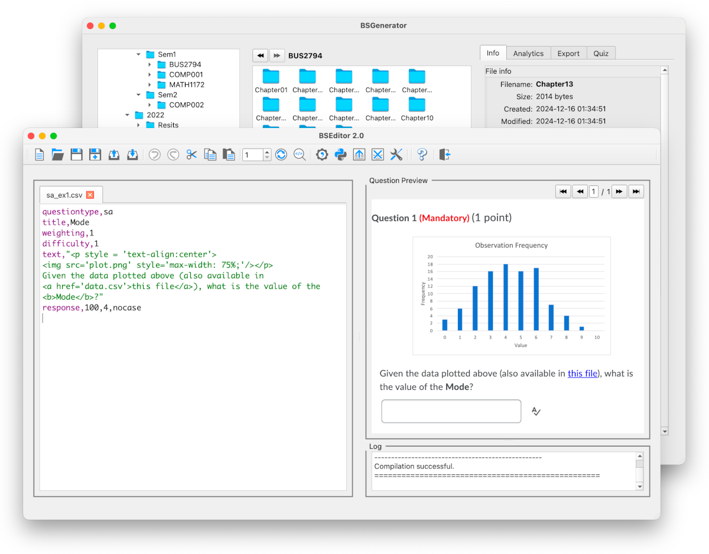

Create and control your assessment content
BSGenerator is a software suite that helps you generate and manage computer-based examinations for your students.
It allows you to create and manage question banks and generate exams, independently of the exam delivery platform. You can focus on the content, while the software simplifies the deployment of the questions and exams to specific platforms.
How does it work?
BSGenerator uses a powerful question creation tool, BSEditor, to help you create and test questions. It uses a simple CSV format, extendable using Python, to unleash your creativity and create elaborate questions, including unique question variations.
BSManager helps you manage your question banks, create exams, and deploy them to exam delivery platforms. Questions can be saved in the industry-standard QTI format, so they are independent of both BSGenerator and the platform you use.